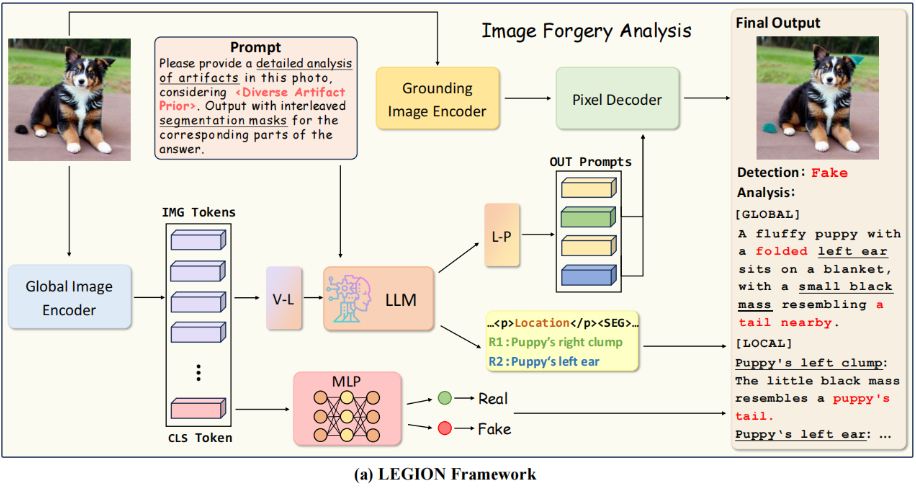

LEGION:Learning to Ground and Explain for Synthetic Image Detection
LEGION: Learning to Ground and Explain for Synthetic Image Detection
Hengrui Kang1,2， Siwei Wen3,2， Zichen Wen1,2*， Junyan Ye4,2， Weijia Li4,2†，Peilin Feng3,2，Baichuan Zhou2，Bin Wang2，Dahua Lin2,5，Linfeng Zhang1， Conghui He2,5†
1上海交通大学
2上海人工智能实验室
3Beihang
University
4中山大学
5SenseTime Research
摘要
生成技术的快速发展是一把双刃剑。它提供了强大的工具来提高便利性，但也带来了重大的社会问题。作为图像检测领域的从业者，现有的合成图像检测方法往往缺乏人工制品级别的文本可解释性，且过度侧重图像篡改检测。当前数据集普遍存在生成器版本过时、标注细节不足等问题。本文提出SynthScars数据集，这是一个包含12,236张全合成图像的高质量多样化数据集，并配有专家人工标注。该数据集包含4种不同图像内容类型、3类人工制品类别，以及涵盖像素级分割、详细文字说明和人工制品分类标签的细粒度标注体系。此外，我们提出名为LEGION（学习生成并解释合成图像检测，(LEarning
to Ground and explain
for Synthetic
Image
detectiON)）的多模态大型语言模型（MLLM）图像伪造分析框架，该框架集成了伪影检测、分割与解释功能。基于这一能力，我们将LEGION作为控制器集成到图像优化流程中，用于指导生成更高品质、更逼真的图像。大量实验表明，LEGION在多个基准测试中均优于现有方法，尤其在SynthScars数据集上，其mIoU值比第二名传统专家模型高出3.31%，F1分数提升达7.75%。此外，在其指导下生成的优化图像更符合人类审美偏好。相关代码、模型及数据集将对外公开。
1.引言
从生成对抗网络[10,21]到扩散模型[13,14,32,36,37]，再到自回归模型[49,51]，图像生成技术发展迅猛，已能产出多样化且细节丰富的合成图像。虽然这项技术提升了创意表达、简化了设计流程并缓解了数据短缺问题，但也带来了隐私泄露、版权纠纷和虚假信息传播等风险。这种矛盾性既彰显了其变革力量，也暴露出伦理困境。众多研究者聚焦图像生成技术的风险，开发了检测合成图像的方法与基准[27,61]以降低社会危害。然而，对合成图像检测研究的全面梳理显示，现有方法仍存在显著局限性。
(I)合成图像检测数据集的挑战。
虽然OpenForensics
[24]提供的数据集包含海量信息，但其主要由早期生成对抗网络技术（GAN）生成的过时合成图像构成。这些图像质量低劣、瑕疵明显，且多采用卡通或动漫风格，人工痕迹极易辨识。正因如此，基于此类数据集训练的模型，在检测逼真合成图像时往往表现欠佳。RichHF-18K数据集[28]使用点注释来描述合成图像中的伪影，但其定位精度较低且边缘划分效果较差。与此同时，基于篡改的数据集（如SID-Set[17]）虽然能提供完整的物体轮廓标注，但其方法的泛化能力较弱，难以适应现代系统的需求。
(II)合成图像检测和伪影定位方法的局限性。
传统方法如PAL4VST
[67]主要依赖低层次结构线索，虽然能有效识别纹理损伤，但在处理需要全局推理的伪影时却力不从心——比如违反光照与阴影物理定律的情况。部分研究[17,18,26,58]尝试引入多模态大型语言模型（MLLMs）来解决这一难题。然而，由于研究方向趋于同质化，这些方法的发展受到限制：它们大多聚焦于篡改后的图像，而对完全合成图像的探索却十分有限。这类合成图像不仅包含更复杂的伪影特征，其现实参照物也较少受约束，且鲜少从可解释性角度进行深入研究。
(III)合成图像检测方法能促进图像生成吗？
当前合成图像检测技术通过识别和定位合成图像中的伪影，有效缓解了图像生成技术带来的社会风险，从而将检测技术定位为“防御者”。然而，图像生成如同双刃剑——若只关注其负面影响，则无法充分发挥合成图像检测的潜力。基于此，我们旨在推动合成图像检测方法的设计范式转变——从构建防御者转向培养控制者。这不仅需要检测和定位合成图像中的伪影，更要引导图像生成器产出更真实自然的图像。通过这种转变，我们能够促进图像生成技术的可控发展。
为解决现有数据集的局限性，我们开发了SynthScars合成图像检测数据集。该数据集通过排除过时、低质量及卡通风格的图像，构建了精细标注体系：采用不规则多边形精准勾勒伪影轮廓，并提供详细的分类说明与技术解析。这种双重注释——空间性和可解释性——提高了数据集对推进合成图像检测研究的价值。为实现深度可解释性，我们提出LEGION——一个专为全合成图像设计的综合性图像伪造分析框架。该框架通过利用多层语言模型（MLLMs）强大的先验知识、推理能力和表达能力，在不同领域展现出强大的泛化能力，并对各类干扰表现出卓越的鲁棒性。此外，我们还探索了将伪造解释作为反馈机制来提升生成更高质量、更逼真图像的潜力。具体而言，我们没有将LEGION定位为防御型模型，而是将其作为控制型模型使用，并分别通过图像再生和修复技术构建了两个迭代优化流程。在图像再生环节，模型生成的伪影解释会持续优化提示词；在图像修复环节，检测到的伪影掩膜及其对应解释将指导逐区域选择性优化，逐步缩小伪影范围并提升图像真实性。与先前方法的整体对比如图1所示。
图1.与现有图像伪造检测方法的对比。LEGION不仅作为防御者，支持多任务伪造分析，还作为控制器，促进高质量图像生成。
本文的主要贡献如下：
- 我们提出了SynthScars数据集，这是一个具有挑战性的合成图像检测数据集，具有高质量的合成图像和多种内容类型，以及细粒度的像素级伪影注释和详细的文本解释。
- 我们提出了LEGION，一个综合的图像伪造分析框架，用于人工制品定位、解释生成和伪造检测，有效地帮助人类专家检测和理解图像伪造。
- 大量实验表明，LEGION在四个极具挑战性的基准测试中均取得了卓越性能。与现有19种方法的对比显示，该方法在绝大多数指标上均达到业界领先水平，展现出强大的鲁棒性和泛化能力。
- 我们不仅将LEGION定位为对抗不断演进的生成技术的防御者，更将其视为引导更高品质、更逼真图像生成的控制器。通过图像再生和修复的定性与定量实验，充分展现了LEGION在提供渐进式伪影优化反馈方面的卓越价值。
2.相关工作
2.1.合成图像检测与定位
传统检测方法基于卷积神经网络和Transformer模型，将合成图像检测视为二分类任务，主要利用空间或频域特征[5,8,20,47,55,59]。然而这些方法普遍存在两大问题：一是难以适应不同生成器的泛化能力，二是对各类扰动缺乏鲁棒性。更重要的是，这类方法还存在可解释性不足的缺陷，针对特定异常原因生成自然语言解释的解决方案至今仍未得到充分探索。
近期，多项研究[11,12,65,67]将最初的二分类任务拓展至更复杂的伪影定位场景。例如，部分学者采用梯度图[41,42,44]或注意力图[15]来识别潜在异常区域；另一些研究者则专注于构建带有详细伪影分割标注的数据集。然而，现有方法主要聚焦于从图像修复[65]或人为篡改[16,34,52]中检测伪造痕迹，却忽视了更具挑战性的AI生成痕迹识别任务。这类痕迹在图像内容、结构特征、风格表现等多维度均存在显著差异，展现出更强的灵活性、多样性和复杂性。
2.2.多模态大型语言模型
在大型语言模型（LLMs）[1,50]取得成功的基础上，多模态大型语言模型（MLLMs）[25,30,70]通过整合视觉与文本处理能力，显著提升了综合任务的性能表现。诸如FakeBench
[27]和LOKI
[61]等基准测试表明，MLLMs在合成图像检测领域展现出巨大潜力，能够生成更具可解释性和情境感知性的检测结果。此外，基于MLLM的通用视觉分割模型[23,40]也取得了长足进步，这些模型能通过语义信息实现精准的目标定位。
近期研究探索了可解释合成图像分析领域，通过提供文本解释来辅助人类判断。例如，FFAA
[18]通过其提出的多答案智能决策系统提升了鲁棒性，但仅限于面部数据且缺乏对定位任务的支持。Fakeshield
[58]精心设计了若干模块以适应不同篡改类型，但未对完整合成图像进行分析。ForgeryGPT
[26]提出定制化的语言模型架构和创新框架，能够从不同特征空间捕捉伪造图像的高阶取证知识关联，实现可解释生成与交互式对话。尽管SIDA同时探索了篡改图像和完整合成图像，但仅针对篡改图像提供伪影分割结果。总体而言，大多数方法主要聚焦于篡改分析，尚未深入探索更复杂的AI生成伪影定位任务。
2.3.引导图像优化
现有的图像生成模型支持多模态条件生成，使得基于分割掩膜和解释的文本引导再生及伪影感知修复成为可能。早期研究[3,13]采用文本驱动方法进行条件图像生成。其他方法如ControlNet
[66]则扩展了这一思路，支持包含掩膜和边缘图等多模态条件输入，从而实现更精准可控的优化过程。近年来，基于语言模型的方法[43,63]崭露头角。例如，Idea2Img
[60]构建了一个智能体系统，利用GPT-4V的重构能力逐步优化文本到图像（T2I）模型的提示词，并通过迭代指导图像生成，显著提升了图像质量与文本-图像对齐效果。
已有研究通过区域级图像伪造分析来指导修复模型修正异常区域。例如，PAL4Inpaint[65]和PAL4VST
[67]将分割掩膜作为条件输入注入修复模型[45,69]或类似SDXL
[39]的优化器。然而由于缺乏对文本伪影的解释，这些方法往往采用对象移除等简单手段，导致语义信息丢失。我们通过将图像伪造分析框架LEGION整合到流程中，为生成模型提供精准的伪影提示，从而拓展了这一思路。
3.SynthScars数据集
3.1.动机
最近生成式人工智能的进步使创建复杂的合成和篡改内容变得更容易，但现有的检测数据集面临重大限制：(i)内容过时：像ProGAN [9]这样的基准模型依赖早期的生成对抗网络，生成的低保真图像很容易与Stable Diffusion 3.51和FLUX2等现代模型的逼真输出区分开来。(ii)领域不匹配：部分数据集专注于动漫风格或合成卡通图像，与现实应用中至关重要的自然摄影内容存在差距。(iii)注释缺陷：像RichHF-18K [28]这类数据集采用稀疏点标注方式，不仅牺牲了空间精度，还会在训练过程中引入模糊性——尤其在处理细微或复杂的篡改操作时更为明显。(iv)边界依赖问题：近期出现的数据集（如SID-Set[17]）主要针对边界清晰的篡改案例，却无法准确表征现实世界中那些边界模糊、上下文混合的伪造场景，导致模型泛化能力受限。
3.2.数据集构建
为解决第3.1节所述的局限性，我们通过一套严格的数据处理流程构建了综合数据集SynthScars，该流程旨在最大限度提升现实相关性和标注精度（如图2所示）。具体而言，我们整合并筛选了来自多个公开数据集的样本，包括RichHF-18K [28]、Chameleon [59]、FFAA [18]等，并按照以下规范进行整理。
数据预处理和质量控制。
为构建平衡且高质量的合成数据集，我们首先通过聚类预训练ResNet-50模型[22]的潜在特征表示进行源样本采样，随后从每个聚类中均匀采样，既避免了数据集特有的偏差，又保持了操作类型和语义内容的多样性。接着，我们采用Qwen2-
VL-72B-Instruct
[53]的多阶段过滤流程解决(i)和(ii)两个限制条件：剔除低质量样本（如模糊或压缩伪影）、非写实内容（如动漫风格图像），以及具有明显合成特征的样本。
双重细粒度标注。
为解决(iii)和(iv)类限制，我们采用不规则多边形掩膜技术对合成图像中的伪影进行标注。这种细粒度标注方法能精准识别图像中任意形状、大小或位置的伪影，更符合当前合成数据的特点——完整物体极少出现伪影。相较于基于点位的标注方式，不规则多边形掩膜在定位伪影区域时具有更高精度。参考文献[33]将合成图像伪影分为物理伪影、畸变伪影和结构伪影三类，我们借鉴这一分类体系，在标注过程中融入细粒度伪影分类机制，确保各类伪影都能获得系统且精准的标注。该方法不仅提升了数据集的清晰度与组织性，更让我们对合成伪影特性有了更深入的理解，从而为后续的针对性分析和模型训练提供了有力支持。
3.3.数据集统计
与现有合成图像数据集相比，表1突显了SynthScars的独特优势：所有样本均配备像素级遮罩、文字说明及伪影类型标注，凭借100%的有效标注率，在合成图像分析领域树立了全新标杆。如需获取包含图像分类和伪影标注等详细数据的统计信息，请参阅附录A。
表1.与现有图像伪造数据集的对比。最后一列显示了由通用生成器完全合成的样本数量，这些样本具有逼真的风格和有效的掩膜。乄表示仅提供篡改图像的掩膜。
4.方法
近期研究（如LISA [23]和GLaMM[40]）已证明多模态大型语言模型（MLLMs）在通用图像分割任务中的潜力。受此启发，我们将类似思路应用于全合成图像伪造分析任务，以解决第2节所述的局限性。为此，我们提出LEGION——一个多任务图像伪造分析框架，支持深度伪造检测、伪影定位及解释生成功能。此外，为提升现有图像生成技术的质量与真实感，我们基于LEGION分别构建了无需训练的图像再生和修复两个专用流程。
4.1.LEGION架构
LEGION系统由四个核心组件构成：(i)全局图像编码器、(ii)大语言模型（LLM）、(iii)基底图像编码器和(iv)像素解码器，如图3 (a)所示。
图3.架构概述。(a)我们提出的图像伪造分析框架LEGION。(b)和(c)展示了两种图像生成流程。其中(b)中的T2I是文本转图像的缩写，(c)中的Loca和Expla分别代表定位和解释。
各组件的具体实现将在后续章节中详细阐述。首先，为从输入图像中提取全局特征，我们采用ViT-H/14 CLIP作为全局图像编码器（\(\mathcal E_g\)）。
深度伪造检测
针对该任务，我们采用常规方法将其建模为二分类问题，即将图像划分为真实或伪造两类。我们利用全局特征表示中的CLS标记，并通过双层多层感知机（MLP）进行预测。具体而言，给定输入图像\(x_i\)时，首先将其编码为特征向量\(I_x={\mathcal E}_g(x_i)\in{\mathbb
R}^{D_v}\)。我们从该特征表示中提取CLS标记（记作\(CLS(\cdot)\)），并将其输入MLP分类器（记作\(MLP(\cdot)\)），从而获得真实类别与虚假类别的概率分布\(y_d\)： \[y_d=MLP(CLS(I_x)).\]
解释生成
为了进一步提升用户友好型自然语言解释的体验，我们引入了基于vicuna的大型语言模型（LLM）来实现视觉-语言对齐。我们设计了一个提示模板："The
<image> provides an overview of the image."+ \(x_p\)，其中\(x_p\)代表专为图像伪造分析设计的定制化提示。具体而言，我们首先将CLIP全局图像编码器输出的剩余256个特征向量（排除CLS标记，记作\(I_x^{\prime}\)）输入视觉-语言（V-L）投影层（\({\mathcal
P}_{vl}\)），该层会替换提示模板中的<image>标记。处理后的提示随后与图3
(a)所示的伪造分析提示\(x_p\)拼接，形成最终引导LLM生成文本解释\(y_e\)的完整提示： \[y_e={\mathcal L}(x_p,{\mathcal
P}_{vl}(I_x^{\prime})).\] 
定位伪影
为了获得像素级伪影掩膜，我们使用预训练的SAM编码器作为基础图像编码器（\({\mathcal
E}_l\)），并参考SAM解码器设计了像素解码器(\(\mathcal D\))。LLM的输出会在每个伪影de
位置描述（例如猫的耳朵）后附加一个特殊标记<SEG>，随后使用语言到提示（L-P）投影层（\({\mathcal
P}_{lp}\)），将与<SEG>标记相关的文本嵌入向量（\(v_{seg}\)）转换至解码器的特征空间。最终，\(\mathcal
D\)通过以下方程式生成二进制掩模(M)： \[M={\mathcal D}({\mathcal E}_l(x_i),{\mathcal
P}_{lp}(v_{seg})),s.t.,M_i\in\{0,1\}.\]
训练
我们采用两阶段独立训练策略。第一阶段，首先通过二元交叉熵（BCE）与Dice损失的加权组合优化分割性能，同时使用交叉熵（CE）损失评估预测解释与真实标注之间的差异，从而完成伪影定位和解释生成任务的训练。第二阶段则聚焦于通过典型交叉熵损失进行分类，以增强模型的伪造检测能力。各阶段损失函数可表示为：
\[\begin{aligned}{\mathcal{L}}_{s1}&=\lambda_{\mathrm}{\mathcal{L}}_{\mathrm}(M,{\hat{M}})+\lambda_{\mathrm{dice}}{\mathcal{L}}_{\mathrm{Dice}}(M,{\hat{M}})+\lambda_{\mathrm{ce}}{\mathcal{L}}_{\mathrm}(y_e,{\hat{y_e}})\\{\mathcal{L}}_{s2}&={\mathcal{L}}_{\mathrm}(y_e,{\hat{y_e}})\end{aligned}\]
4.2.图像修复流程
生成与检测技术相互促进，共同推动着它们的协同进化。受文献[67]启发，我们将LEGION从防伪系统升级为生成控制器，无需额外训练数据即可实现无伪影优化。通过为生成模型提供指导和反馈，LEGION能逐步消除潜在伪影，从而提升最终输出的质量与真实感。为此，我们探索了两种优化策略：一种是利用提示词修正进行图像再生，另一种则是运用修复技术对伪影区域进行选择性修正。
图像再生
我们采用一种迭代生成方法，将提示修订与文本到图像（T2I）模型相结合，如图3(b)所示。
给定初始图像\(I_0\)和提示\(P_0\)，我们将该提示输入T2I模型（记作Regen\((\cdot)\)）以重新生成更新后的图像\(I_1\)，其可能包含生成不良的伪影区域。随后使用我们的LEGION框架对\(I_1\)进行分析，该框架返回伪影异常的详细解释（例如手指变形）。这些解释将被记录在记忆库(M)中。随后，文本优化器（标记为Revise\((\cdot)\)）通过重新审视记忆库中的历史记录，对文物相关区域的描述进行丰富，从而对初始提示\(P_0\)进行优化。经过优化后的提示\(P_1\)将用于生成图像的下一轮迭代。这一迭代过程会持续多次，逐步提升图像与提示的质量。具体而言，在第t次迭代时（t为0到N-1范围内的正整数），其递推公式可表示为：
\[\begin{aligned}{\mathcal
M}_t&={\mathcal
M}_{t-1}+\mathrm{LEGION}(I_{t}),\\P_{t+1}&=\mathrm{Revise}(P_{t},\mathcal{M}_{t}),\\I_{t+1}&=\mathrm{Resen}(P_{t+1}).\end{aligned}\]
图像修复
我们还构建了一个如图3(c)所示的修复流程，通过使用图像修复模型迭代去除伪影并逐步提升图像质量。
与完全再生相比，这种方法能更好地保留非伪影区域，因为图像并非完全再生，而是仅对异常区域进行选择性优化。具体来说，给定输入图像\(I_0\)时，我们首先使用LEGION框架进行图像伪造分析，并将反馈信息组织成区域三元组集(A)，其中每个区域表示为\((L_i，M_i，E_i)\)，L、M、E分别代表位置、掩膜和解释。随后通过输入修复模型（标记为Inpaint\((\cdot)\)）处理每个识别出的伪影区域，该模型接收对应的掩膜和文本解释作为输入。这一过程逐区域进行直至完成所有区域，最终生成优化后的图像。通过多次迭代上述流程，可获得更高品质且更逼真的图像。对于第t次迭代的图像\(I_t\)，该过程可表述为： \[\begin{aligned}{\mathcal A}_{t}=\mathrm{LEGION}(I_{t})=\{(L_{i},M_{i},E_{i})\mid i=1,2,\cdot\cdot\cdot,k\}\\I_{t+1}=I_{t}+\sum_{i=1}^{k}M_{i}\cdot(\mathrm{Inpaint}(I_{t},M_{i},E_{i})-I_{t}).\end{aligned}\]
5.实验
5.1.实验设置
实施细节
我们采用GLaMM的预训练权重，因其在提出的基于对话生成任务中展现出强大的能力。在第一阶段训练中，我们使用LoRA在8块NVIDIA
A100
GPU上对GLaMM进行微调，每块设备的α值为8，批量大小为2。初始学习率设为1e-4，公式4中平衡三种损失类型的权重超参数λce、λdice和λbce分别设置为1.0、0.2和0.4。在第二阶段训练中，我们直接在ProGAN上使用8块NVIDIA
A100
GPU训练多层感知机（MLP），初始学习率设为1e-3，每块设备的批量大小为64。
评估指标
在伪影定位任务中，我们通过报告前景与背景区域的平均交并比（mIoU）以及整体F1分数来评估分割性能，具体方法参考文献[11,12,67]。此外，为评估生成文本解释与真实标注的一致性，我们采用两项指标：基于n-gram重叠和序列匹配的ROUGE-L指标，以及基于预训练语言模型生成的文本嵌入计算余弦相似度的余弦相似度分数（CSS），该方法源自FakeShield[58]（详见附录B.2)。在图像修复环节，我们采用文献[56]提出的人类偏好评分（HPS）来评估再生图像和修复图像的质量与真实感。
5.2.定位评估
为评估模型在人工标注数据集上的定位性能，我们采用SynthScars数据集的训练集作为训练样本，并通过其测试集进行域内评估。此外，我们使用经过筛选的LOKI [61]和RichHF-18K [28]数据集来检验模型对未知领域的泛化能力，这些数据集仅保留具有真实风格的图像。我们将LEGION与全合成伪影定位领域的顶尖模型（SOTAs）进行对比。基准测试包括传统专家模型，如HiFi-Net [12]、TruFor [11]和PAL4VST [67]，以及用于物体定位的视觉语言模型，例如Ferret [62]、Griffon [64]和LISA [23]。此外，我们还对在各类任务中表现优异的通用多语言语言模型进行了评估，包括InternVL2 [7]、Qwen2-VL [53]和DeepSeek-VL2 [57]。
表2.在未见过的领域中SynthScars和两个基准上的伪影定位性能比较。
> ∗表示在SynthScars数据集上进行微调的模型，其余模型因缺乏训练代码而采用预训练权重。☆和□分别代表输出分割掩膜和边界框的模型。灰度处理方法将图像大部分区域预测为伪影，仅作参考用途，未纳入本次对比。
表2的测试结果表明，尽管LEGION在RichHF-18K数据集上的F1分数略低于LISA-v1-7B和TruFor，但它在全部三个评估数据集上均达到了业界顶尖水平。与传统专家模型相比，LEGION在SynthScars数据集的对象类别中，F1分数比最强专家模型PAL4VST高出10.65分，并且在另外两个数据集中也持续保持优势。针对对象定位的视觉语言模型（VLMs）和通用多语言学习模型（MLLLMs），我们发现这些模型因缺乏预训练和特定任务的先验知识，在伪影定位方面存在明显短板。这导致两种极端现象：部分模型完全无法识别前景区域（如DeepSeek-VL2)，而另一些模型则过度估计伪影，将大部分图像视为巨大伪影（如Ferret、Griffon和Qwen2-VL)，导致平均交并比（mIoU）偏低，但因对前景的过度召回而人为抬高了F1分数。在SynthScars数据集上微调的InternVL2和LISA虽表现稍好，但LEGION仍以多数指标优势碾压两者。各方法的可视化对比详见图4。
鲁棒性研究
我们还系统比较了LEGION与PAL4VST在三种扰动类型下的定位性能。相关结果详见附录B表10，充分证明了本模型在强干扰环境下的鲁棒性——这是传统方法难以企及的关键优势。
5.3.解释性性能
5.4.检测性能
基于前人研究[4,38,47,48,68]，我们在ProGAN模型[9]上训练LEGION，并通过UniversalFakeDetect基准测试[38]评估其跨生成器泛化能力。如表5所示，LEGION在GAN、CRN和IMLE数据集上取得最高准确率，在SITD数据集保持具有竞争力的第二名表现，并在其他生成器上维持了相当的检测性能。
5.5.图像修复案例
6.结论
在本研究中，我们通过构建SynthScars数据集，探索了完全合成图像伪造分析这一极具挑战性的任务。该数据集包含多种高难度伪影实例，这些实例不受局部轮廓限制，需要全局理解能力。为实现更精细的伪影分析，我们提出基于大模型语言模型（MLLM）的LEGION框架，相比传统方法显著提升了可解释性。实验结果表明，该框架在多个基准测试和评估指标中均展现出卓越性能与强大鲁棒性。该研究在定性与定量层面均展现出作为引导式图像生成和修复控制器的强大潜力。尽管我们提出的数据集和方法弥补了图像伪造分析中的若干关键缺陷，但完全合成伪像固有的多样性和灵活性仍为未来改进提供了广阔空间。我们期待更多研究者深入探索这一领域，共同推动生成式人工智能的负责任与伦理化应用。